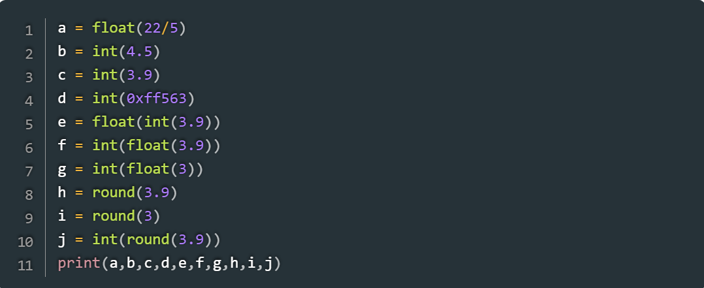

O Python é uma linguagem de programação amplamente usada em aplicações da Web, desenvolvimento de software, ciência de dados e machine learning (ML). Os desenvolvedores usam o Python porque é eficiente e fácil de aprender e pode ser executada em muitas plataformas diferentes. O software Python pode ser baixado gratuitamente, integra-se bem a todos os tipos de sistema e agiliza o desenvolvimento.
Os benefícios do Python incluem:
Os desenvolvedores podem ler e entender facilmente um programa Python, porque tem uma sintaxe básica semelhante à do inglês. O Python aumenta a produtividade dos desenvolvedores, porque eles podem escrever um programa Python usando menos linhas de código em comparação a muitas outras linguagens. O Python tem uma grande biblioteca-padrão que contém códigos reutilizáveis para quase todas as tarefas. Como resultado, os desenvolvedores não precisam escrever códigos do zero. Os desenvolvedores podem usar o Python facilmente com outras linguagens de programação populares, como Java, C e C++. A comunidade ativa do Python inclui milhões de desenvolvedores de suporte em todo o mundo. Se você tiver algum problema, poderá obter suporte rápido da comunidade.
